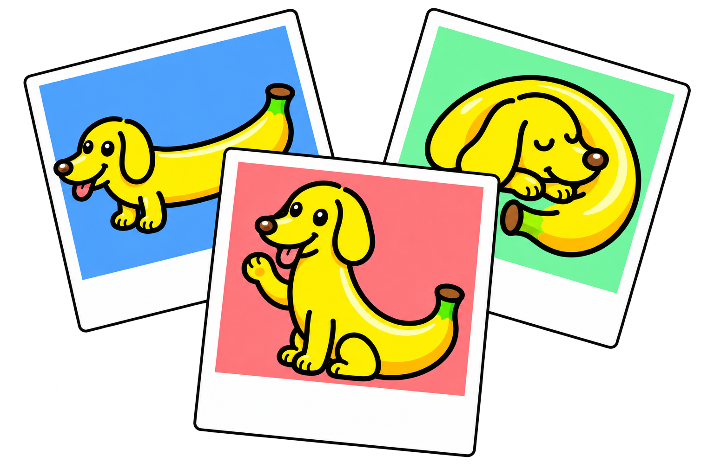

The LongBanana benchmark

Case GalleryExplore the references. Read the instruction.
See what it takes to get every detail right.
90 cases9 categories32 references / case
90 cases
Loading the case index…
Reading a case
One instruction.
A complete visual context.
Each case includes its full synthesis instruction, a simulated target, and 32 reference images. Targets illustrate the intended scene; they are not a model leaderboard result.
Learn how outputs are evaluated